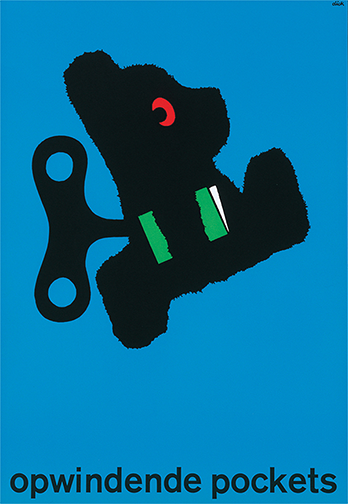
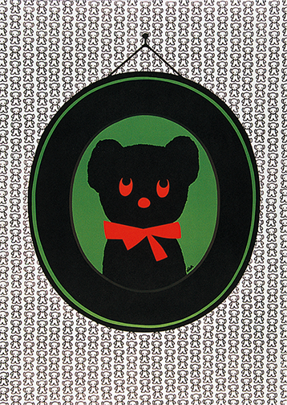
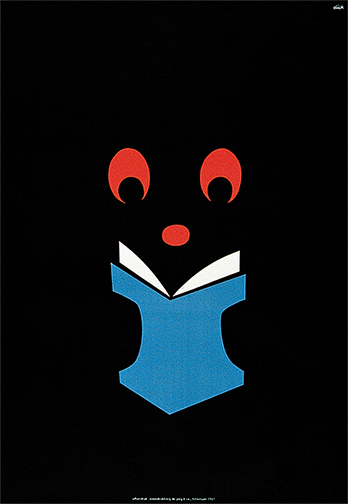
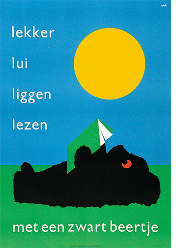
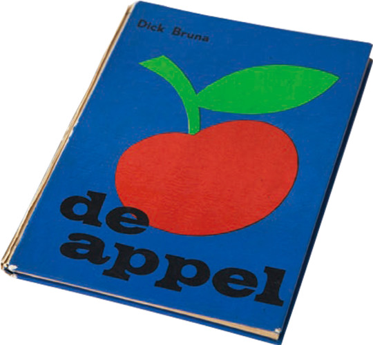
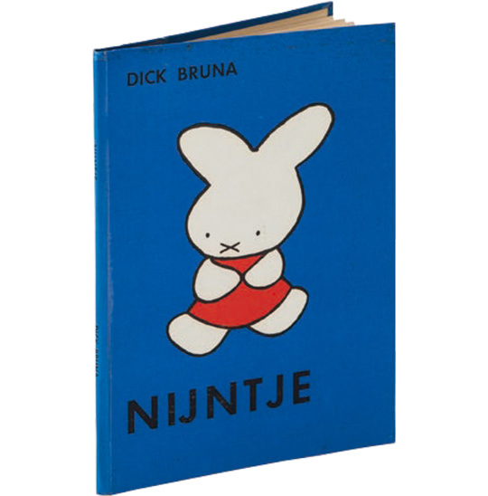
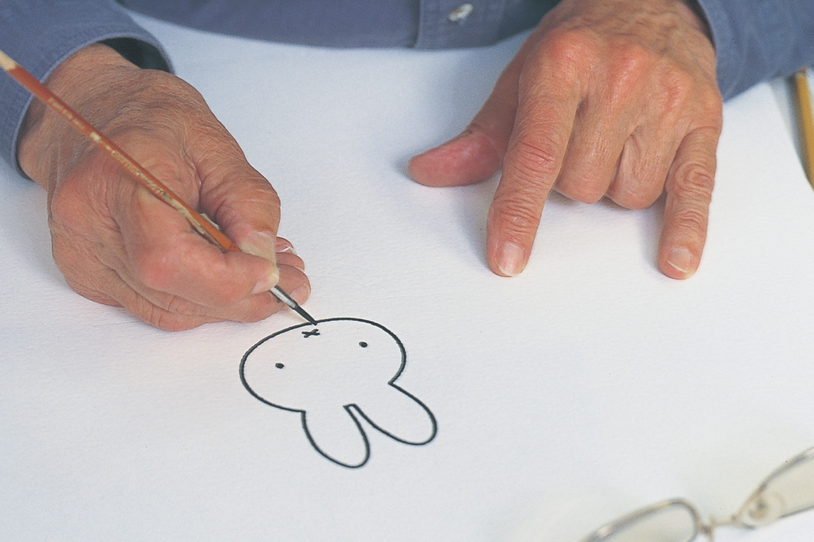

ブルーナさんのこと
ディック・ブルーナさんは、1927年、オランダ・ユトレヒトに生まれました。 絵本作家・グラフィックデザイナーとして世界的に活躍。 2017年2月、その生涯をとじるまでに、120作を超える絵本を創作しました。 暖かみのある手描きの線、鮮やかな色使い、観る者の想像力に訴えるシンプルで大胆な構成の作品で、世界中の子供から大人まで幅広く愛されています。
graphics
ブルーナさんは、絵本を作り始める前から、父親の出版社でデザイナーとして活躍し、ペーパーバック（文庫本）の表紙をデザインしていました。1951年から約20年の間に手がけた表紙は2000冊にもおよびました。 そのペーパーバックシリーズの宣伝用ポスターには、本を読み過ぎて目の赤くなったクマのキャラクター＜ブラック・ベア＞が登場し、人気を呼びました。




books
1953年には初めての絵本 『de appel（りんごぼうや）』を、 1955年にはミッフィーの最初の絵本となる 『nijntje（ちいさなうさこちゃん）』を発表します。


約60年にわたり、アトリエでひとり創作を続けたブルーナさん。 その絵本は全世界で50カ国語以上に翻訳され、8500万部以上のロングセラーとなっています。
